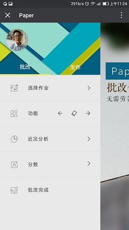
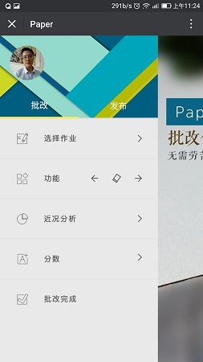

Hello world!
——Finch
When I pass by the mountain,the mountain does not speak
When I pass by the sea,the sea does not speak
Do not give up. Your dream is the greatest thing in the word
简介：
- 苏 奋 强 (Finch)/男 /1995
- CAFUC /本 科 /计 算 机 科 学 与 技 术
- 毕 业 时 间 ： 2018 年
- 地址：gansu,China
- 英 语 水 平 ： 暂 无 （ 四 级 400）
- Github: https://github.com/Yooook
- 技 术 博 客 ： http://blog.apskt.com/
(hexo+github， 发 布 原 创 文 章 90 篇 )
联系方式：
- 邮箱： 654672373@qq.com
项目经历:
电影查询App （ 日 常 学 习 ）
- 人数：一个人做
- 实现方法：react native（Android平台）+ 豆瓣api
- 已实现功能：导航栏：Navigator组件，标签栏：react-native-tab-navigator组件，触摸高亮：TouchableHighlight组件，进度组件：ActivityIndicator组件，可以进行简单的电影排行的查看，以及电影详情查询，电影搜索等.
快递签收App （ 商 业 ）
- 人数：一个人做
- 实现方法：Ionic（Angular）+ 甲方接口
- 已实现功能：跨域方式实现用户登录，登录状态检测，扫描条形码获取运单信息，调用摄像头拍照并获取照片的based64编码。
- 项目进度：改进中，原因：由于采用跨域方式实现数据传递，jsonp默认采用get方式提交，数据量过大无法提交，同时对方服务器没有CORS的相关设置。
基于互联网＋的教管辅助系统（ 创 新 项 目 ）
- 人数：两个人做
- 实现方法：WeChat+php+mysql
- 实现功能：前期：我做了整个原型系统，从web功能实现到后台php的搭建，以及相关的mysql创建，实现了项目初期的运行。后期：我将该项目从web端转移到了微信端，做了微信内置浏览器的开发，处理了手势冲突，以及解决了手势拖拽和缩放功能，实现了canvas在微信端的，图片加载功能，橡皮擦功能，标记功能，导出图片功能，上传功能等等，还做了三级的listView，实现了canvas随着图片个数的动态加载和翻页，以及对数据做一些简单的数据可视化分析。
- 项目进度：在学校里一定范围内投入使用。
“Our Story”App （ 日 常 学 习 ）
- 人数：一个人做
- 实现方法：Ionic（Angular）
- 已实现功能：主要是用了Ionic相关的组件，Ionic Js ，Ionic Css 以及Ionic的延迟加载组件，swiper.js等，自己设计了各个界面，实现了下拉刷新，上拉加载，焦点图，图片延时加载，广告滚动等等，自己模拟了数据库的数据。
政府会议系统（ 商 业 ）
- 人数：两个人做
- 我实现的功能：基于web，canvas随图片个数动态加载，刷新，上下翻页，快速翻页，标记，标记打开关闭，擦除，保存标注笔迹功能等等，还有具体页面的设计和bootstrap的一些应用。
- 项目进度：已完成。
气象管理系统（ 商 业 ）
- 人数：两个人做
- 我实现的功能：整个前端的设计和功能实现，自己做了一些网页特效，处理了一些超长超多字段表单，还有电梯导航，幽灵按钮，模态框等等，主要界面设计和实现较多
- 项目进度：已完成。
出国留学网前端部分（ 军 方 ）
- 人数：一个人做
- 实现功能：所有界面设计和实现+ 兼容IE678（项目要求）
- 项目进度：已完成，获得好评。
通信站前端部分（ 军 方 ）
- 人数：两个人做
- 实现功能：所有界面设计和实现 + 兼容IE678（项目要求）
- 项目进度：已完成。
自己学院官网（ 日 常 学 习 ）
- 人数：两个人做
- 我实现的功能：网站首页设计与制作，为其他子页面奠定风格
学校影视文化中心网站（日 常 学 习 ）
- 人数：一个人做
- 实现功能：所有页面的设计与制作，响应式布局
大学生创新创业基地官网（ 注 ： 自 己 所 在 的 小 组 织 ）
- 人数：一个人做
- 实现功能：最早做的第一个静态网站
- 项目进度：已完成。
除 此 之 外 ， 还 做 过 微 信 图 灵 机 器 人 的 api 接 入 ， hexo+github 搭 建 博 客 ， 封 装 自 己 的 JavaScript 框 架 ， Angular 实 现 过 todomvc， 做 过 web 版 五 子 棋 ， 读 过 几 本 JavaScript 相 关 的 书 ， 迷 恋 原 生 javascript 的 实 现 ， 在 此 之 前 还 有 自 己 也 记 不 清 的 前 端 页 面 制 作 经 历 ， pc 端 ， 移 动 端 ， 响 应 式 ， webApp 都 做 过 ， 学 习 ， 或 者 创 新 ， 没 有 其 他 目 的 。
- 当 过 体 育 委 员 （ 爱 好 锻 炼 ）
- 当 过 班 长 （ 后 来 由 于 学 习 精 力 不 够 ， 辞 职 了 ）
- 当 过 学 校 的 计 算 机 协 会 会 长 （ 老 了 ， 换 新 的 了 ）
- 现 任 大 学 生 创 新 创 业 基 地 技 术 员 （ 这 才 是 真 爱 ）
- 参 加 过 学 校 三 届 的 网 页 设 计 大 赛 （ 一 个 一 等 ， 两 个 二 等 ）
- 学 院 的 先 进 个 人
- 全 国 互 联 网 +比 赛 铜 奖
一部分项目截图展示
 
